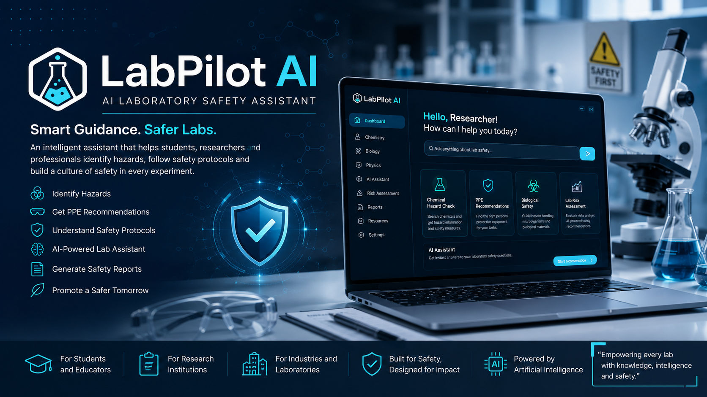

LabPilot AI
An AI-powered laboratory safety platform that helps students, researchers, and laboratory staff identify hazards, receive PPE and safety protocol recommendations, and generate safety reports.
Project overview
LabPilot AI is an AI-powered laboratory safety platform that helps students, researchers, and laboratory staff identify hazards, receive PPE and safety protocol recommendations, and generate safety reports.
Problem addressed
Laboratory safety information and recommendations need to be accessible during practical scientific work.
Solution
An AI-powered laboratory safety assistant for hazard identification, safety recommendations, and report generation.
Key features
Hazard identification; PPE recommendations; safety protocol recommendations; safety report generation.
My role
Concept development, interface design, and project presentation support for a laboratory safety AI workflow.
Technology stack
AI-assisted safety workflows, web interface design, and user-facing scientific application design.